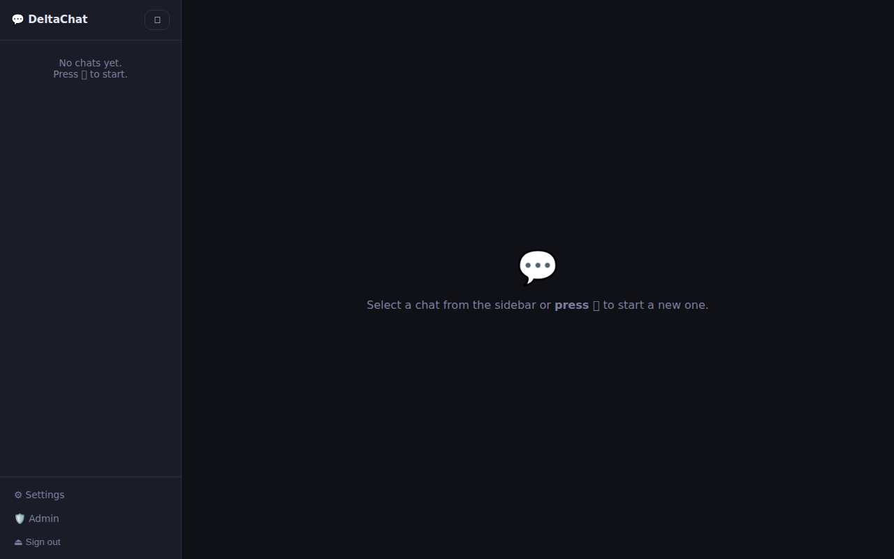
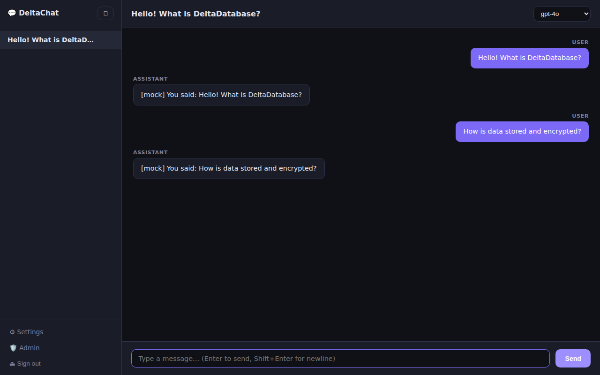

Example: Chat Application¶
This example ships a complete, runnable chat application in
examples/chat/
that uses DeltaDatabase as its sole storage backend.
The application is built with Flask and tested with Playwright.
Screenshots¶
Sign in¶

Register¶

Chat (empty state)¶

Chat (conversation)¶

Settings¶

Admin Panel¶

Features¶
| Feature | Details |
|---|---|
| 🔐 Authentication | Session-based login/register — every page except /login and /register is protected |
| 💬 Per-user chats | Chat histories are isolated per user |
| ⚙ User settings | Each user stores their own OpenAI API key, custom base URL, and default model |
| 🛡 Admin panel | Admins see all users and assign per-user allowed model lists |
| 🤖 OpenAI backend | OpenAI-compatible APIs only (key + optional custom endpoint) |
| 🗄 DeltaDatabase | All data stored exclusively in DeltaDatabase |
| 🧪 Playwright tests | End-to-end browser tests for all major flows |
Quick Start¶
Docker Compose¶
cd examples/chat
docker compose up --build
Open http://localhost:5000.
Default admin credentials: admin / admin123.
To run without a real OpenAI key, enable mock mode:
MOCK_OPENAI=true docker compose up --build
Local Python¶
# Start DeltaDatabase
docker compose -f ../../deploy/docker-compose/docker-compose.all-in-one.yml up -d
# Install deps and run
pip install -r examples/chat/requirements.txt
DELTA_DB_URL=http://localhost:8080 MOCK_OPENAI=true python examples/chat/app.py
DeltaDatabase Schema¶
The app stores data across five logical databases — no external database is needed:
| Database | Key pattern | Contents |
|---|---|---|
chat_users |
<username> |
Password hash, admin flag, creation timestamp |
chat_sessions |
<username>__<chat_id> |
Full message history, title, timestamps |
chat_index |
<username> |
Ordered list of chat IDs for that user |
chat_user_config |
<username> |
OpenAI API key, base URL, default model |
chat_admin_config |
global |
Global available models + per-user overrides |
chat_admin_config |
users_index |
Ordered list of all registered usernames |
Schema example — a chat session¶
{
"username": "alice",
"id": "a1b2c3d4e5",
"title": "What is DeltaDatabase?",
"messages": [
{"role": "user", "content": "What is DeltaDatabase?"},
{"role": "assistant", "content": "An encrypted-at-rest JSON database written in Go."}
],
"created_at": "2026-02-25T10:00:00",
"updated_at": "2026-02-25T10:00:05"
}
Environment Variables¶
| Variable | Default | Description |
|---|---|---|
DELTA_DB_URL |
http://localhost:8080 |
DeltaDatabase REST endpoint |
DELTA_DB_CLIENT_ID |
chat-app |
Client ID for DeltaDatabase auth |
FLASK_SECRET_KEY |
random | Flask session signing key |
ADMIN_USERNAME |
admin |
Username created on first run |
ADMIN_PASSWORD |
admin123 |
Password for the default admin |
MOCK_OPENAI |
false |
Return stub replies instead of calling OpenAI |
PORT |
5000 |
HTTP port |
Running Playwright Tests¶
# Start the stack in mock mode
MOCK_OPENAI=true docker compose -f examples/chat/docker-compose.yml up -d --build
# Install and run tests
cd examples/chat/tests
npm install
npx playwright install --with-deps chromium
npm test
Test suites:
| File | Covers |
|---|---|
auth.spec.js |
Login, register, protected-route redirects, logout |
chat.spec.js |
New chat, send/receive message, title update, delete |
settings.spec.js |
Open settings, save API key, model selection, navigation |
admin.spec.js |
Admin visibility, model assignment, non-admin blocked |
Architecture¶
Browser
│ HTTP
▼
Flask (examples/chat/app.py) :5000
│ REST (HTTP/JSON)
▼
DeltaDatabase Main Worker :8080
│ gRPC
▼
DeltaDatabase Processing Worker
│
Encrypted JSON on disk
The Flask app holds a single DeltaDatabase Bearer token (refreshed automatically on expiry) and maps every application concept — users, chats, config — to DeltaDatabase entities. No SQL, no Redis, no separate session store.
Source¶
Full source code:
examples/chat/